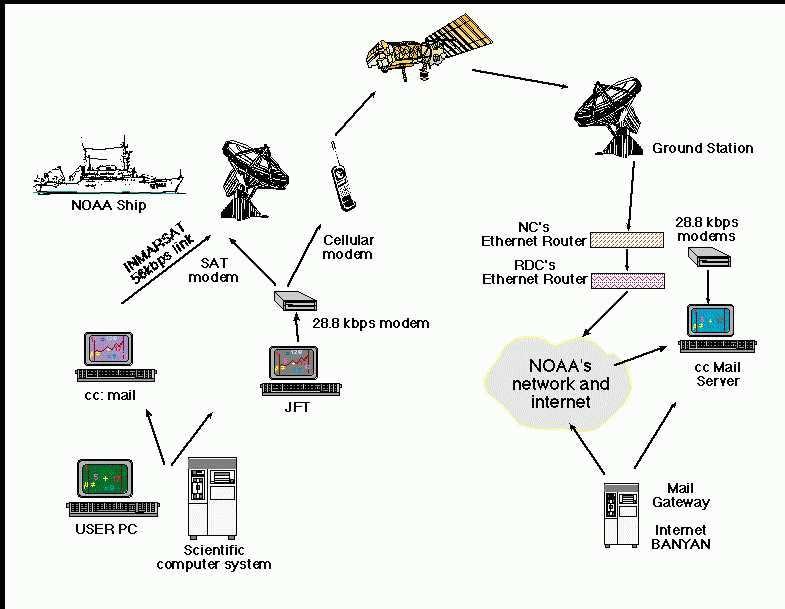

Podemos definir a internet como uma rede de computadores
conectados no mundo todo. Já a Web é um serviço que funciona
através dessa rede.

A história da Internet começou durante a Guerra Fria, quando surgiu a necessidade de criar uma forma de comunicação entre computadores.
Em 1969, surgiu a ARPANET, uma das primeiras redes que ajudaram no desenvolvimento da Internet.
Em 1971, foi enviado um dos primeiros e-mails. Depois disso, o protocolo TCP/IP passou a ser usado para facilitar a comunicação entre diferentes redes.
Em 1989, Tim Berners-Lee criou a ideia da World Wide Web. A Web permitiu ligar documentos através de links.
Em 1991, a Web começou a ser disponibilizada publicamente e, com o tempo, foi ficando cada vez mais popular.
A fórmula da água é H2O.
A Web possui diferentes versões, como Web 1 e Web 2.
A Internet continua evoluindo e hoje está presente em várias áreas do nosso dia a dia.
| Ano | Acontecimento |
|---|---|
| 1969 | Criação da ARPANET |
| 1971 | Primeiro e-mail |
| 1983 | Adoção do TCP/IP |
| 1989 | Proposta da World Wide Web |
| 1991 | Web disponibilizada publicamente |
| 1993 | Popularização dos navegadores |
| Final | Internet e Web continuam evoluindo |
História da Internet e da Web.